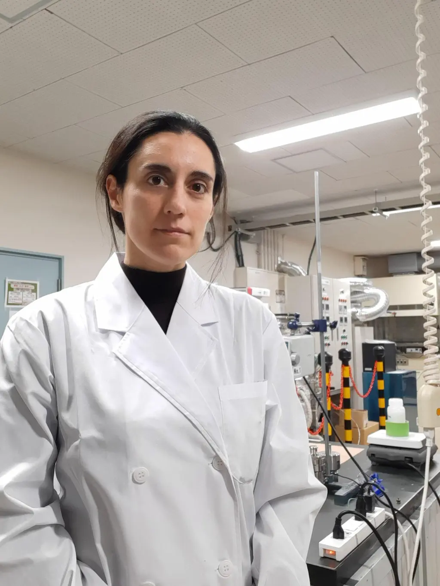

About Raquel.
Scientist, educator, builder of bridges between Spain and Japan — and a working chemist who designs matter at the molecular scale for industries that need to change.

Raquel Simancas is an Assistant Professor at The University of Tokyo, where she leads a research programme on zeolite science and its industrial applications. Her work sits at the intersection of advanced materials, catalysis and sustainable chemistry — and her career has traced a deliberate arc from Madrid and Valencia to the heart of Asia's most active materials community.
Trained at the Instituto de Tecnología Química (ITQ, UPV-CSIC) under Avelino Corma, she completed a PhD on the design of organic structure-directing agents for new zeolite topologies — work that produced the first chiral zeolite framework reported in literature. A Marie Skłodowska-Curie Global Fellowship took her to Tokyo, where she joined the Catalysis & Materials Group and never quite left.
Today her group works closely with BASF, Saudi Aramco, Repsol, and academic partners at Oxford, Berkeley and TU Delft — translating fundamental discoveries into industrial-scale catalysts for CO2 valorization, methane upgrading and biomass conversion. She holds editorial roles in Microporous & Mesoporous Materials and ChemCatChem, and serves as President of the Association of Spanish Researchers in Japan.
Her work has been recognized by the FEZA Young Investigator Award, the Premio Nacional de Investigación, and featured in La Vanguardia de la Ciencia — but the projects she finds most meaningful are the ones that move from a beaker on a bench to a reactor in a plant.
Outside the lab she mentors early-career scientists, advocates for international mobility, and remains convinced that the next chapter of sustainable industrial chemistry will be written in collaboration — across disciplines, sectors, and time zones.
A path from Madrid → Valencia → Tokyo.
Building scientific bridges.
Three roles outside the lab — editorial, community and mentorship — that make the science travel further than any single project could.
“Science travels best when the people doing it can travel too — across labs, sectors, languages and continents.”
— Raquel SimancasThe next decade will demand chemistry that is selective, durable and scalable — and built by teams that span continents. Zeolites will be part of it.